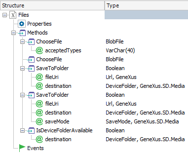
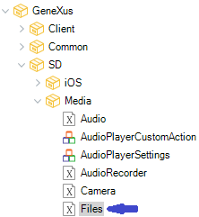
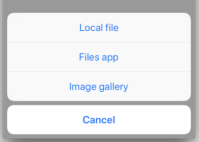

The Files external object enables you to programmatically select files from your device to be assigned to Blob and BlobFile attributes and variables.
|  |  |
It does not have any.
Selects a file from the device.
| Return value | BlobFile |
| Parameters | [ acceptedTypes:VarChar data type ] |
The method will display the available sources in the device to select a file. In the case of iOS applications, these sources will be:

The optional acceptedTypes parameter must be specified as a comma-separated list of mime types, such as:
Note: the acceptedTypes parameter is available in Android since GeneXus 16 upgrade 10. It is not yet available in iOS.
If the acceptedTypes parameter is not present, then all file types are shown.
Saves the specified File to the device system folder.
Return Value Boolean
Parameters fileUri:URL, destination:DeviceFolder, /* saveMode: SaveMode */.
The parameter saveMode is optional. The default behavior is Rename.
It does not have any
DeviceFolder
Values: Documents, Dowloads.
SaveMode
Values:
Rename: If a file already exists in destination, creates a copy.
Replace: If a file already exists in destination, will replace the content if possible. If not possible for secure reason, do a Renamed
AskUser: If file already exists in destination, will ask the user if to do a Replacement or Rename.
If the file already exists in the destination folder, by default it is renamed so that both files are kept. Override with the new name is composed by the original name, an index between parentheses, and the file extension.
For example, when saving Name.ext, if it already exists, it will be saved as Name(1).ext. If Name(1).ext also exists, Name(2).ext will be used. And so on.
If SaveMode is Replace, If the file already exists in the destination folder, it is overriding with the new content if possible. If not, a Renamed is performing.
Event 'SelectFile'
Composite
&BlobFile = Files.ChooseFile()
SaveFile(&BlobFile)
EndComposite
EndEvent
Event 'SaveToFolder'
&fileUrl = Reporte("MyPublicReport")
Files.SaveToFolder( &fileUrl, DeviceFolder.Documents)
EndEvent
| Platforms | Smart Devices |
| Backlinks | |
| Files external object (GeneXus 17 Upgrade 7) | Category:Smart Devices API |